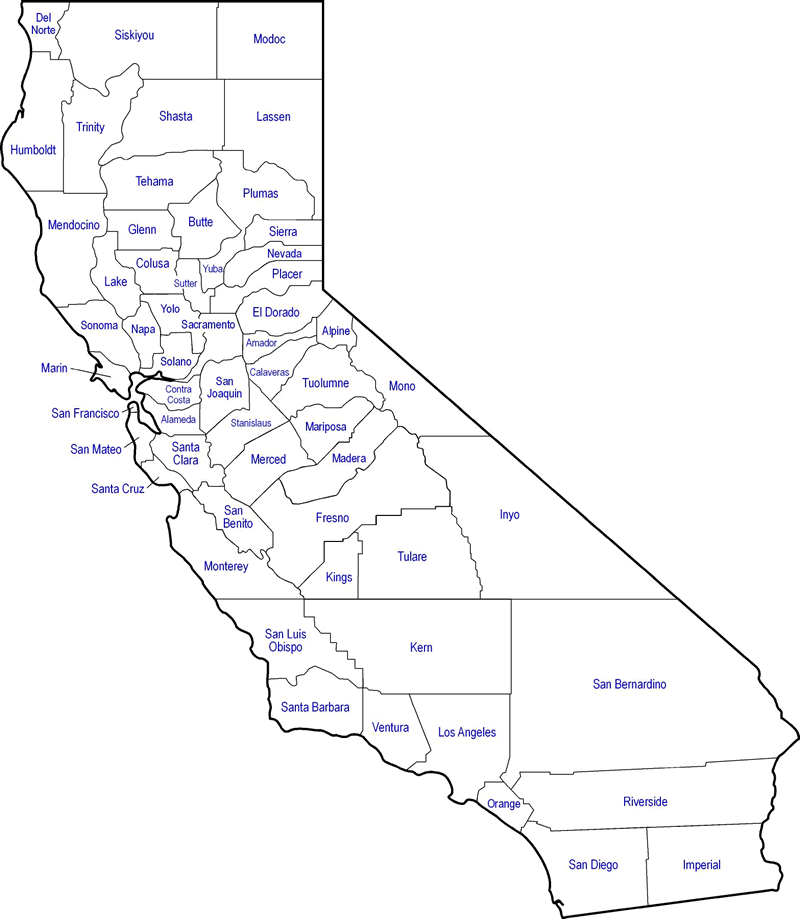

Practical COVID Data for California
Why Hospitalizations?
Last Updated 5-26-2020
Souce: California COVID-19 Hospital Data and Case Statistics
Questions or Requests for other Regions & Counties: contact@califcovid.org
Bay Area - 6 Counties

Southern California - 6 Counties

California

Central Valley (South)

California County Map

To Do's: Add Confirmed Cases and Deaths with composite metric, then add Testing plus combined with Confirmed Cases, change to interactive map and non 1999-html
CalifCOVID.org is a project of Focus on Foundations, a 501(c)3 STEM Education Nonprofit